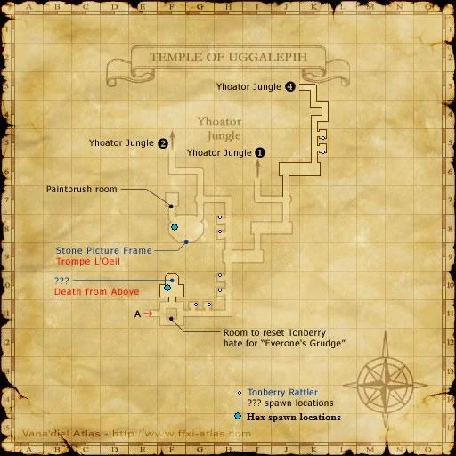

Level 75 reference · Zenith rules
StatisticsTonberry Rattle |
Other UsesUsed in Quests: None
|


Image source
How to Obtain
Examining a ??? on the first map in the Temple of Uggalepih. Respawns every 2 hours.
Adapted from Eden Wiki: Tonberry Rattle · Contributors and history · CC BY-SA 4.0. Revision 6153. Layout, links and optional background text adapted for Zenith.